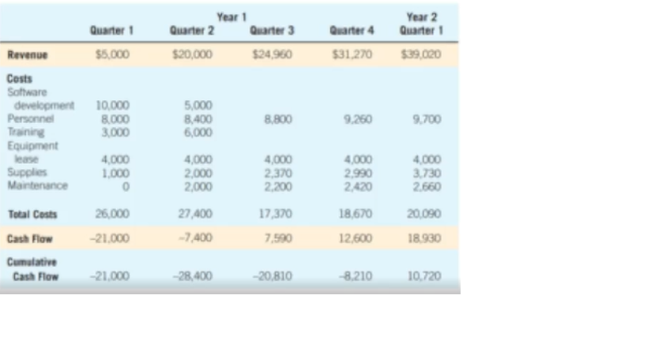

Project Management
Introduction
Systems projects begin with problems or with opportunities for improvement. Problems and opportunities are not the same
Systems analyst works with users to create a problem definition.
Once a project is suggested, the systems analyst works quickly with decision makers.
When project is approved the project activities are scheduled through the use of tools such as the Gantt charts and Programs Evaluation and Review Technique
- Project Initiation
- Determining Feasibility
- Technical Feasibility
- Economic Feasibility
- Operational Feasibility
- Ascertaining Hardware and Software Needs.
- Inventorying Computer Hardware
- Estimate Workloads
- Evaluating Computer Hardware for Purchase
- Renting Time and Space in the Cloud
- Evaluation of Vendor Support for Computer Hardware.
- Understanding the Bring Your Own Device (BYOD) option.
- Creating Custom Software.
- Purchasing COTS Software
- Using the Services of a SaaS provider
- Evaluation of Vendor Support for Software and SaaS
- Identifying, forecasting, and comparing costs and benefits
- Forecasting.
- Identifying Benefits and Costs.
- Comparing Costs and Benefits.
- Guidelines for Analysis.
- The Word Breakdown Structure.
- Managing Time and Activities
- Time Estimation Techniques.
The process of analysis and design can become unwieldy, especially when the system being developed is large. To keep the development activities as manageable as possible, you can employ some of the techniques of project management to help get organized. One of the difficult tasks is estimating the time it takes to complete each of the tasks. There are numerous approaches: 1. Relying on experience 2. Using analogies 3. Using three-point estimation 4. Identifying function points 5. Using time estimation software
- Project Scheduling.
- Controlling a Project.
- Estimating Costs and Preparing the Budget
- Managing Risk
The top-down approach to cost estimation: Previous experience with estimating costs means a great deal, especially if the project you are attempting to estimate resembles a project you have previously worked on. If you've developed a website with similar features, then you can reliably estimate the costs of developing a new website. Customization is possible. The new website may feature a different number of products for sale, but it is possible to adjust the costs accordingly. The bottom-up approach to cost estimation: Often, an analyst is faced with a project that requires something unique, such as development in a different programming language. In this case, the analyst needs to use a bottom-up approach. A systems analyst can take the work breakdown structure and ask each responsible project team member to estimate the cost involved with completing the activity he or she is responsible for. This method, however, yields estimates that are good or bad, depending on the abilities of each team member. Parametric modeling: This method involves making estimates for each of the many factors, or parameters, that make up a project. For example, you can estimate that it will cost $75 per line of code and $80 per hour for the programmers needed; you can then estimate the lines of code and hours it will take to complete the project.
- Managing Time Using Expediting
- Controlling Costs Using Earned Value Management
- Managing Project Team
- Assembling a Team
- Communication Strategies for Managing Teams
- Setting Project Productivity Goals
- Motivating Project Team Members
- Creating a Project Charter
Clients experience problems.
They recognize opportunities for improvement through upgrading, altering, or installing new systems when they occur.
To make sure that the solution is adaptable and possible.
{kind=link}
Can the company actually afford to do the project? They have to pay the programmers.
{kind=link}
More on human resources available. There is a system, the question is, Will they use it? Focuses more on will.

To not buy unnecessary things like mouse.

{kind=link}
Ready available, paliton lang nimo.

{kind=link}
A systems analyst has many forecasting models available. The main condition for choosing a model is the availability of historical data.
If historical data is unavailable, the analyst must turn to one of the judgment methods: estimates from the sales force, sureveys to estimate customer demand, Delphi studies (a consensus forecast developed independently by a group of experts through series of iteration)
If historical data is available, the next differentiation between classes of techniques involves whether the forecast is conditional or unconditional.
TANGIBLE BENEFITS. Tangible benefits are advantages that are measurable in dollars that accrue to the organization through the use of the information system. Examples of tangible benefits are an increase in the speed of processing, access to otherwise inaccessible information, access to information on a more timely basis than was possible before, the advantage of the computer's superior calculating power, and a decrease in the amount of employee time needed to complete specific tasks.
INTANGIBLE BENEFITS. Some benefits that increase to an organization from the use of an information system are difficult to measure but are important nonetheless. They are known as intangible benefits. Intangible benefits include improving the decision-making process, enhancing accuracy, becoming more competitive in customer service, maintaining a good business image, and increasing job satisfaction for employees by eliminating tedious tasks.
TANGIBLE COSTS. The concepts of tangible and intangible costs present a conceptual parallel to the tangible and intangible benefits discussed already. Tangible costs are costs that a systems analyst and the business's accounting personnel can accurately project. Included in tangible costs are the cost of equipment such as computers and terminals, the cost of resources, the cost em protes salies These, costs are usual we estabisned or d at bee discovered quite easily; they are costs that will require the business to make a cash outlay.
INTANGIBLE COSTS. Intangible costs are difficult to estimate and may not be known. They include losing a competitive edge, losing the reputation for being first with an innovation or the leader in a field, declining company image due to increased customer dissatisfaction, and ineffective decision making due to untimely or inaccessible information.
BREAK-EVEN ANALYSIS. By comparing costs alone, a systems analyst can use break-even analysis to determine the break-even capacity of a proposed information system. The point at which the total costs of the current system and the proposed system intersect represents the break-even point, the point where it becomes profitable for the business to get the new information system.
{kind=link}
{kind=link}
CASH-FLOW ANALYSIS. Cash-flow analysis examines the direction, size, and pattern of the cash flow associated with the proposed information system. If you are proposing the replacement of an old information system with a new one and if the new information system will not be generating any additional cash for the business, only cash outlays are associated with the project.
{kind=link}
PRESENT VALUE ANALYSIS. Present value analysis helps a systems analyst present to business decision makers the time value of the investment in the information system as well as the cash flow (as discussed in the previous section). Present value is a way to assess all the economic outlays and revenues of the information system over its economic life and to compare costs today with future costs and today's benefits with future benefits.
{kind=link}
The use of the methods discussed in the preceding subsections depends on the methods employed and accepted in the organization. For general guidelines, however, it is safe to say the following:
subsections depends on the methods employed and accepted in the organization. For general guidelines, however, it is safe to say the following: 1. Use break-even analysis if the project needs to be justified in terms of cost, not benefits, or if benefits do not substantially improve with the proposed system. 2. Use payback when the improved tangible benefits form a convincing argument for the proposed system. 3. Use cash-flow analysis when the project is expensive relative to the size of the company or when the business would be significantly affected by a large drain (even if temporary) on funds. 4. Use present value analysis when the payback period is long or when the cost of borrowing monev is high
Systems analysts are responsible for completing projects on time and within budget and for including the features promised. In order to accomplish all three of these goals, a project needs to be broken down into smaller tasks or activities. These tasks together make up a work breakdown structure (WBS). When defined properly, the tasks that compose a work breakdown structure have special properties: 1. Each task or activity contains one deliverable, or tangible outcome, from the activity. 2. Each task can be assigned to a single individual or a single group. 3. Each task has a responsible person monitoring and controlling performance.
{kind=link}
{kind=link}
Planning includes all the activities required to select a systems analysis team, assign members of the team to appropriate projects, estimate the time required to complete each task, and schedule the project so that tasks are completed in a timely fashion. Control means using feedback to monitor the project, including comparing the plan for the project with its actual evolution. In addition, control means taking appropriate action to expedite or reschedule activities to finish on time while motivating team members to complete the job properly.
{kind=link}
{kind=link}
The top-down approach to cost estimation The bottom-up approach to cost estimation: Often, an analyst is faced with a project that requires something unique, such as development in a different programming language. In this case, the analyst needs to use a bottom-up approach. A systems analyst can take the work breakdown structure and ask each responsible project team member to estimate the cost involved with completing the activity he or she is responsible for. This method, however, yields estimates that are good or bad, depending on the abilities of each team member. Parametric modeling